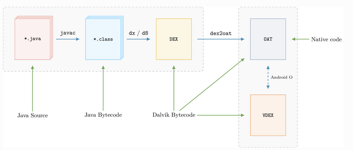

1. java/dex/odex/oat/vdex的历史演变
- 在应用开发时，Android代码的主要部分通常用Java编写；APK构建时，java源码首先用javac编译成Java字节码 ，然后Android通过使用d8编译器将此字节码转换为DEX文件（Dalvik字节码）。
- 在Android 4.4（KitKat）之前，运行时使用JIT编译将Dalvik字节码转换为目标机器代码，JIT在每次执行应用程序时都会执行，因此代码执行效率很低。从Android 4.4开始，引入新的运行时ART，它在安装过程中执行优化，安装需要更多时间，但转换为本机代码只需执行一次。
- 为了优化DEX字节码，原始DEX文件（例如classes.dex）被提取和转换为另一个包含机器代码的文件。这个新文件通常具有.odex ，.oat扩展名；
- 在安卓5.0以前，主要使用虚拟机是Dalvik。使用dexopt优化生成文件为odex（无机器代码），主要组成有完整dex文件、odex文件头、依赖库列表、类索引信息等；
- 在art虚拟机模式下，oat文件直接包含了可在ART下运行的机器码，OAT中还有一份原始DEX的副本。
- 从8.0以后，Dex从Android 8.0后独立到vdex文件，dex2oat执行的转换会生成两个文件：classes.odex（实际上是oat文件）：包含本机代码的OAT和classes.vdex：包含原始DEX文件副本的VDEX文件。

2. 安卓可执行文件
- OAT文件
- OAT文件是一种Android私有ELF文件格式，是Android运行时ART的核心，不仅包含有从DEX文件翻译而来的本地机器指令，还包含有原来的DEX文件内容；
- 在 Android 8.0之后，dex2oat 生成的不再是单一个 OAT 文件，而是生成两个文件 classes.odex（实际是oat文件）跟 classes.vdex（dex 副本），odex + vdex = apk 的全部源码 （vdex 并不是独立于odex 的文件 odex + vdex 才代表一个apk );
- Android <=7可以从oat文件中提取dex，8.0以后只能从vdex中提取。
- ODEX文件
- Android <=4.4之前，使用dexopt优化DEX文件为odex，主要组成有完整dex文件、odex文件头、依赖库列表、类索引信息等；
- 在art模式下（5.0以后art为默认运行时环境），ODEX文件实质上是oat文件。
- vdex文件
- Android 8.0在odex的基础上又引入了vdex机制，目的是为了减少dex2oat中验证的时间；
- verified dex，包含 raw dex +（quicken info)，文件头+打包的一些验证好的dex；
- Dex从Android 8.0后独立到vdex文件，这个时候要逆向，一样可以从 vdex 中提取出 dex文件，再作逆向
- cdex
- cdex是Android 9推出的一种新型Dex文件，即Compact Dex（Cdex）。Cdex是一种ART内部文件格式，它压缩各种Dex数据结构（例如方法头）并对多索引文件中的常见数据blob（例如字符串）进行重复数据删除。来自输入应用程序的Dex文件的重复数据删除数据存储在Vdex容器的共享部分中。
- cdex是Android 9推出的一种新型Dex文件，即Compact Dex（Cdex）。Cdex是一种ART内部文件格式，它压缩各种Dex数据结构（例如方法头）并对多索引文件中的常见数据blob（例如字符串）进行重复数据删除。来自输入应用程序的Dex文件的重复数据删除数据存储在Vdex容器的共享部分中。
- Art
- image文件，存储热点方法string，method，types等。
3. 安卓可执行文件的分析工具
提取dex类
- vdexExtractor && compact_dex_converter_linux（支持8.0、9.0的vdex提取）
- 转化过程：
Vdex - > dex (android 8)， vdex -> cdex -> dex (Android 9) - 命令行：
Vdex->dex: vdexExtractor -i /tmp/BasicDreams.vdex -o /tmp --deps -f （9.0里会先转成cdex）Cdex -> dex: compact_dex_converter_linux -w tmp ./wifi-service_classes.cdex （注意：cdex转dex，后缀不会变，依然为dex）
- 转化过程：
oatdump
（安卓system/bin目录下自带，编译为共享文件，并且各个Android版本下的不通用，不便于做Android全系列的离线分析）
支持查看oat文件的类与方法，支持类名过滤，支持从oat中导出dex文件；其中，8.0和9.0指定oat或odex文件，但实际从vdex中提取dex，需将odex文件和vdex文件放在同一目录下。- 使用例子（dump services.odex中类名为PackageManagerService，方法为isPackageDeviceAdminOnAnyUse的相关信息）
1
.oatdump --oat-file=services.odex --class-filter=PackageManagerService --method-filter=isPackageDeviceAdminOnAnyUse
- 也可以导出dex文件
Example: --export-dex-to=/data/local/tmp
- 使用例子（dump services.odex中类名为PackageManagerService，方法为isPackageDeviceAdminOnAnyUse的相关信息）
dextra
支持从oat、odex、vdex中提取dex文件，支持查看dex、odex、oat、dex类、方法、字符串、符号等。安卓8.0、9.0的oat文件不支持查看，9.0的vdex不支持。
baksmali
主要用来反编译dex到jar，也可以从jar回编译到smalilief
用于解析和修改 ELF, PE 和MachO（mac平台上可执行文件）格式的跨平台库，支持Python调用，当然也支持dex、odex、oat、cdex的解析，不过当前不支持Android 9.0的可执行文件。
dex转jar
- dex2jar-2.0
d2j-dex2jar.bat wifi-service_classes.dex （报版本错误时，将dex的版本改为0x36）
作者声明
本文版权归作者(rohex)所有，旨在技术交流使用。未经作者同意禁止转载，转载后需在文章页面明显位置给出原文连接，否则相关责任自行承担。
This is copyright.